공조냉동기계기사(구) (2014-08-17 기출문제)
1과목: 기계열역학
1. 이상기체 프로판(C3H8, 분자량 M=44)의 상태는 온도 20℃, 압력 300 kPa 이다. 이것을 52 L(liter)의 내압 용기에 넣을 경우 적당한 프로판의 질량은? (단, 일반기체상수는 8.314 kJ/kmolㆍK이다.)
- 0.282 kg
- 0.182 kg
- 0.414 kg
- 0.318 kg
(정답률: 72%)

2. 다음 그림과 같은 오토사이클의 열효율은? (단, T1=300K, T2=689K, T3=2364K, T4=1029 K이고, 정적비열은 일정하다.)
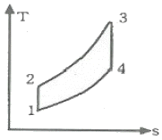
- 37.5%
- 43.5%
- 56.5%
- 62.5%
(정답률: 63%)
3. 카르노 사이클이 500 K의 고온체에서 360 kJ의 열을 받아서 300K의 저온체에 열을 방출한다면 이 카르노 사이클의 출력일은 얼마인가?
- 120 kJ
- 144 kJ
- 216 kJ
- 599 kJ
(정답률: 65%)
4. 5 kg의 산소가 정압 하에서 체적이 0.2m3에서 0.6m3로 증가했다. 산소를 이상기체로 보고 정압비열 Cp=0.92 kJ/kg℃로 하여 엔트오피의 변화를 구하였을 때 그 값은 얼마인가?
- 1.587 kJ/K
- 2.746 kJ/K
- 5.⑤4 kJ/K
- 6.507 kJ/K
(정답률: 72%)
5. 공기압축기로 애초 2kg의 공기가 연속적으로 유입된다. 공기에 50kW의 일을 투입하여 공기의 비엔탈피가 20 kJ/kg 증가하면, 이 과정동안 공기로부터 방출된 열량은 얼마인가?
- 102 kW
- 90 kW
- 15 kW
- 10 kW
(정답률: 55%)
6. 압축비가 7.5 이고, 비열비 k=1.4인 오토 사이클의 열효율은?
- 48.7%
- 51.2%
- 55.3%
- 57.6%
(정답률: 74%)
7. 피스톤-실린더 시스템에 100 kPa의 압력을 갖는 1 kg의 공기가 들어 있다. 초기 체적은 0.5m3이고 이 시스템에 온도가 일정한 상태에서 열을 가하여 부피가 1.0m3이 되었다. 이 과정 중 전달된 열량(kJ)은 얼마인가?
- 32.7
- 34.7
- 44.8
- 50.0
(정답률: 47%)
8. 열역학 제 1법칙은 다음의 어떤 과정에서 성립하는가?
- 가역 과정에서만 성립한다.
- 비가역 과정에서만 성립한다.
- 가역 등온 과정에서만 성립한다.
- 가역이나 비가역 과정을 막론하고 성립한다.
(정답률: 71%)
9. PVn=일정(n≠1)인 가역과정에서 밀폐계(비유동계)가 하는 일은?
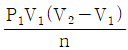
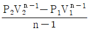
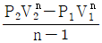
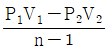
(정답률: 72%)
10. 다음 중 이상 랭킨 사이클과 카르노 사이클의 유사성이 가장 큰 두 과정은?
- 등온가열, 등압방열
- 단열팽창, 등온방열
- 단열압축, 등온가열
- 단열팽창, 등적가열
(정답률: 59%)
11. 체적이 0.1m3인 피스톤-실린더 장치 안에 질량 0.5kg의 공기가 430.5 kPa 하에 있다. 정압과정으로 가열하여 온도가 400K가 되었다. 이 과정동안의 일과 열전달량은? (단, 공기는 이상기체이며, 기체상수는 0.287 kJ/kgㆍK, 정압비열은 1.004 kJ/kgㆍK 이다.)
- 14.35 kJ, 35.85 kJ
- 14.35 kJ, 50.20 kJ
- 43.⑤ kJ, 78.90 kJ
- 43.⑤ kJ, 64.55 kJ
(정답률: 64%)
12. 효율이 85%인 터빈에 들어갈 때의 증기의 엔탈피가 3390 kJ/kg이고, 가역 단열 과정에 의해 팽창할 경우에 출구에서의 엔탈피가 2135 kJ/kg 이 된다고 한다. 운동 에너지의 변화를 무시할 경우 이 터빈의 실제 일은 약 몇 kJ/kg 인가?
- 1476
- 1255
- 1067
- 906
(정답률: 57%)
13. 두께가 10 cm이고, 내ㆍ외측 표면온도가 각각 20℃와 5℃ 인 벽이 있다. 정상상태일 때 벽의 중심온도는 몇 ℃인가?
- 4.5
- 5.5
- 7.5
- 12.5
(정답률: 68%)
14. 작동 유체가 상태 1부터 상태 2까지 가역 변화할 때의 엔트로피 변화로 옳은 것은?
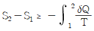
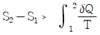
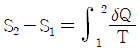
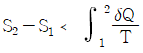
(정답률: 72%)
15. 단열된 노즐에 유체가 10 m/s의 속도로 들어와서 200m/s의 속도로 가속되어 나간다. 출구에서의 엔탈피가 he=2770 kJ/kg일 때 입구에서의 엔탈피는 얼마인가?
- 4370 kJ/kg
- 4210 kJ/kg
- 2850 kJ/kg
- 2790 kJ/kg
(정답률: 55%)
16. 표준 증기압축식 냉동사이클에서 압축기 입구와 출구의 엔탈피가 각각 1⑤ kJ/kg 및 125 kJ/kg 이다. 응축기 출구의 엔탈피가 43 kJ/kg 이라면 이 냉동사이클의 성능계수(COP)는 얼마인가?
- 2.3
- 2.6
- 3.1
- 4.3
(정답률: 73%)
17. 100 kg의 물체가 해발 60m에 떠 있다. 이 물체의 위치 에너지는 해수면 기준으로 약 몇 kJ 인가? (단, 중력가속도는 9.8 m/s2이다.)
- 58.8
- 73.4
- 98.0
- 122.1
(정답률: 79%)
18. 체적이 500 cm3인 풍선이 있다. 이 풍선에 압력 0.1 MPa, 온도 288 K의 공기가 가득 채워져 있다. 압력이 일정한 상태에서 풍선 속 공기 온도가 300 K로 상승했을 때 공기에 가해진 열량은? (단, 공기의 정압비열은 1.0⑤ kJ/kgㆍK, 기체상수 0.287 kJ/kgㆍK 이다.)
- 7.3 J
- 7.3 kJ
- 73 J
- 73 kJ
(정답률: 60%)
19. 열효율이 30%인 증기사이클에서 1 kWh의 출력을 얻기 위하여 공급되어야 할 열량은 약 몇 kWh인가?
- 1.25
- 2.51
- 3.33
- 4.90
(정답률: 79%)
20. T-S선도에서 어느 가역 상태변화를 표시하는 곡선과 S축 사이의 면적은 무엇을 표시하는가?
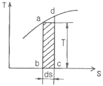
- 힘
- 열량
- 압력
- 비체적
(정답률: 85%)
2과목: 냉동공학
21. 냉동능력 50RT 브라인 냉각장치에서 브라인 입구온도 -5℃, 출구온도 -10℃, 냉매의 증발온도 0℃로 운전되고 있을 때, 냉각관 전열면적이 30m2이라면 열 통과율은? (단, 열손실은 무시하며 평균 온도차는 산술평균으로 계산하며, 1RT=3320 kcal/h로 계산한다.)
- 약 572 kcal/n2ㆍhㆍ℃
- 약 673 kcal/n2ㆍhㆍ℃
- 약 737 kcal/n2ㆍhㆍ℃
- 약 842 kcal/n2ㆍhㆍ℃
(정답률: 67%)
22. 실제 냉동사이클에서 냉매가 증발기에서 나온 후, 압축기에서 압축될 때까지 흡입가스 변화는?
- 압력은 떨어지고 엔탈피는 증가한다.
- 압력과 엔탈피는 떨어진다.
- 압력은 증가하고 엔탈피는 떨어진다.
- 압력과 엔탈피는 증가한다.
(정답률: 60%)
23. 냉매와 흡수제로 NH3-H2O을 이용한 흡수식 냉동기의 냉매의 순환 과정으로 옳은 것은?
- 증발기(냉각기) → 흡수기 → 재생기 → 응축기
- 증발기(냉각기) → 재생기 → 흡수기 → 응축기
- 흡수기 → 증발기(냉각기) → 재생기 → 응축기
- 흡수기 → 재생기 → 증발기(냉각기) → 응축기
(정답률: 69%)
24. 냉동장치의 제어기기 중 전기식 액면제어기에 대한 설명으로 틀린 것은?
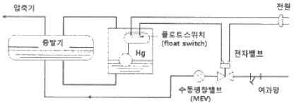
- 플로트스위치(float switch)와 전자밸브를 사용한다.
- 만액식 증발기의 액면 제어에 사용한다.
- 부하 변동에 의한 유면 제어가 불가능하다.
- 증발기내 액면 유동을 방지하기 위해 수동팽창밸브(MEV)를 설치한다.
(정답률: 76%)
25. 직경이 다른 2개 이상의 수액기를 병렬연결 하기 위한 설치방법으로 옳은 것은?
- 하단을 일치시켜 연결시킨다.
- 상단을 일치시켜 연결시킨다.
- 옆으로 일치시켜 연결시킨다.
- 아무 곳에나 연결시킨다.
(정답률: 64%)
26. 제빙장치에서 브라인온도가 -10℃, 결빙시간이 48시간 일 때, 얼음의 두께는? (단, 결빙계수는 0.56이다.)
- 약 29.3 cm
- 약 39.3 cm
- 약 2.93 cm
- 약 3.93 cm
(정답률: 58%)
27. 냉동장치 내에 불응축 가스가 혼입되는 원인으로 가장 거리가 먼 것은?
- 냉동장치의 압력이 대기압 이상으로 운전될 경우 저압측에서 공기가 침입한다.
- 장치를 분해, 조립하였을 경우에 공기가 잔류한다.
- 압축기의 축봉장치 패킹 연결부분에 누설부분이 있으면 공기가 장치 내에 침입한다.
- 냉매, 윤활유 등의 열분해로 인해 가스가 발생한다.
(정답률: 82%)
28. 고온 35℃, 저온 -10℃에서 작동되는 역카르노 사이클이 적용된 이론 냉동 사이클의 성적계수는?
- 2.89
- 3.24
- 4.24
- 5.84
(정답률: 77%)
29. 냉각 방식에 관한 설명 중 가장 거리가 먼 것은?
- 어떤 물질을 얼리는 것만이 냉동이라고 할 수 있다.
- 일반적으로 실내의 온도를 외기온도보다 낮추어 시원하게 하는 것을 냉방이라 한다.
- 우유 등의 제품을 영상의 온도에서 차게 보관하는 것을 냉장이라고 한다.
- 상온 이상의 뜨거운 물질을 삭히는 것을 냉각이라 한다.
(정답률: 80%)
30. 고온부의 절대온도를 T1, 저온부의 절대 온도를 T2, 고온부로 방출하는 열량을 Q1, 저온부로부터 흡수하는 열량을 Q2하고 할 때, 이 냉동기의 이론 성적계수(COP)를 구하는 식은?
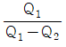
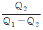
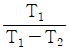
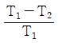
(정답률: 82%)
31. 흡수식 냉동기에 대한 설명으로 틀린 것은?
- 흡수식 냉동기는 열의 공급과 냉각으로 냉매와 흡수제가 함께 분리되고 섞이는 형태로 사이클을 이룬다.
- 냉매가 암모니아일 경우에는 흡수제로서 리튬브로마이드(LiBr)를 사용한다.
- 리튬브로마이드 수용액 사용 시 재료에 대한 부식성 문제로 용액 중에 미량의 부식억제제를 첨가한다.
- 압축식에 비해 열효율이 나쁘며 설치면적을 많이 차지한다.
(정답률: 84%)
32. 압축기 구조 형태 중 개방형 압축기에 대한 특징으로 틀린 것은?
- 압축기를 구동하는 전동기가 따로 설치되어 있다.
- 크랭크축이 크랭크식 밖으로 관통되어 있어 냉매가 누설될 염려가 있다.
- 축봉장치가 필요 없다.
- 소음이 심하고 좁은 장소에서의 설치가 곤란하다.
(정답률: 75%)
33. 냉매의 구비 조건에 대한 설명으로 틀린 것은?
- 중기의 비체적이 적을 것
- 임계온도가 충분히 높을 것
- 점도와 표면장력이 크고 전열성능이 좋을 것
- 부식성이 적을 것
(정답률: 83%)
34. 고속으로 회전하는 임펠러에 의해 대량 증기의 흡입, 압축이 가능하며 토출밸브를 잠그고 작동시켜도 일정한 압력 이상으로는 더 이상 상승하지 않는 특징을 가진 압축기는?
- 왕복동식 압축기
- 회전식 압축기
- 스크류식 압축기
- 원심식 압축기
(정답률: 60%)
35. 2단 압축 냉동기의 저압측 흡입압력과 고압측 토출압력이 게이지압으로 각각 5 kgf/cm2, 15kgf/cm2일 때, 성적계수가 최대로 되는 중간압력(절대압)은? (단, 대기압은 1.033 kgf/cm2으로 한다.)
- 약 9.83 kgf/cm2
- 약 11.15 kgf/cm2
- 약 12.65 kgf/cm2
- 약 13.11 kgf/cm2
(정답률: 67%)
36. 냉동장치의 응축기에 관한 설명 중 옳은 것은?
- 횡형 셸튜브 응축기는 전열이 양호하고 냉각관 청소가 용이하다.
- 7통로 응축기는 전열이 양호하고 입형에 비해 냉각수량이 많다.
- 대기식 응축기는 냉각수량이 적어도 되며 설치장소가 작다.
- 입형 셸튜브 응축기는 냉각관 청소가 용이하고 과부하에 잘 견딘다.
(정답률: 64%)
37. 다음과 같이 운전되고 있는 열펌프의 성적계수는?
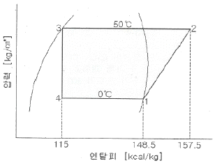
- 1.7
- 2.7
- 3.7
- 4.7
(정답률: 58%)
38. 냉동능력 감소와 압축기 과열 등의 악영향을 미치는 냉동 배관내의 불응축 가스를 제거하는 장치는?
- 액-가스 열교환기
- 여과기
- 여큐물레이터
- 가스퍼저
(정답률: 87%)
39. 2.5 kgf/cm2 압력에서 작동되는 냉동기의 포화액 밎 건포화증기의 엔탈피는 각각 94.58 kcal/kg, 147.03 kcal/kg 이다. 이 경우 건도가 0.75인 지점의 습증기 엔탈피는?
- 약 98 kcal/kg
- 약 110 kcal/kg
- 약 121 kcal/kg
- 약 134 kcal/kg
(정답률: 63%)
40. 흡수식 냉동기의 구성요소가 아닌 것은?
- 증발기
- 응축기
- 재생기
- 압축기
(정답률: 82%)
3과목: 공기조화
41. 보일러의 발생증기를 한 곳으로만 취출하면 그 부근에 압력이 저하하여 수면동요 현상과 동시에 비수가 발생된다. 이를 방지하기 위한 장치는?
- 급수내관
- 비수방지관
- 기수분리기
- 인젝터
(정답률: 73%)
42. 직접팽창코일의 습면코일 열수를 산출하기 위하여 필요한 인자는?
- 대수 평균 온도차(MTD)
- 상당 외기 온도차(ETD)
- 대수 평균 엔탈피차(MED)
- 산술 편균 엔탈피차(AED)
(정답률: 47%)
43. 공기의 온도나 습도를 변화시킬 수 없는 것은?
- 공기필터
- 공기재열기
- 공기예열기
- 공기가습기
(정답률: 83%)
44. 외기온도 -5℃, 실내온도 20℃일 때 온수방열기의 방열면적이 5m2이면 방열기의 방열량은?
- 약 1.3 kW
- 약 2.6 kW
- 약 3.4 kW
- 약 3.8 kW
(정답률: 49%)
45. 공기조화 설비에서 공기의 경로로 옳은 것은?
- 환기덕트 → 공조기 → 급기덕트 → 취출구
- 공조기 → 환기덕트 → 급기덕트 → 취출구
- 냉각탑 → 공조기 → 냉동기 → 취출구
- 공조기 → 냉동기 → 환기덕트 → 취출구
(정답률: 72%)
46. 습공기에 대한 설명으로 틀린 것은?
- 노점온도는 수증기 분압 및 절대습도가 높을수록 높은 값을 가진다.
- 상대습도는 공기 중 수분량이 같으면 온도에 관계없이 동일하다.
- 습공기의 습구온도는 항상 건구온도보다 낮은 온도를 나타낸다.
- 건습구 온도계는 기류에 따라 습구온도가 변하므로 일정풍속을 가해야 한다.
(정답률: 68%)
47. 20명의 인원이 각각 1개비의 담배를 동시에 피울 경우 필요한 실내 환기량은? (단, 담배 1개비당 발생하는 배연량은 0.54 g/h, 1m3/h의 환기 가능한 허용 담배 연소량은 0.017 g/h 이다.)
- 약 235m3/h
- 약 347m3/h
- 약 527m3/h
- 약 635m3/h
(정답률: 78%)
48. 다음 중 냉각탑에 관한 용어 및 특성 설명으로 틀린 것은?
- 어프로치(approach)는 냉각탑 출구수온과 입구공기 건구온도 차
- 레인지(range)는 냉각수의 입구와 출구의 온도차
- 어프로치(approach)를 적게 할수록 설비비 증가
- 레인지(range)는 공기조화에서 5~8℃ 정도로 설정
(정답률: 63%)
49. 환기(ventilation)란 A에 있는 공기의 오염을 막기 위하여 B로부터 C를 공급하여, 실내의 D를 실외로 배출하고 실내의 오염 공기를 교환 또는 희석시키는 것을 말한다. 여기서 A, B, C, D로 적절한 것은?
- A-일정 공간, B-실외, C-청정한 공기, D-오염된 공기
- A-실외, B-일정공간, C-청정한 공기, D-오염된 공기
- A-일정 공간, B-실외, C-오염된 공기, D-청정한 공기
- A-실외, B-일정 공간, C-오염된 공기, D-청정한 공기
(정답률: 83%)
50. 과열증기에 대한 설명 중 옳은 것은?
- 습포화 증기에 압력을 높인 것이다.
- 습포화 증기에 열을 가한 것이다.
- 건조포화 증기에 압력을 낮춘 것이다.
- 일정한 압력조건에서 포화증기의 온도를 높인 것이다.
(정답률: 73%)
51. 송풍 덕트 내의 정압제어가 필요 없고, 소음발생이 적은 변풍량 유닛은?
- 유인형
- 슬롯형
- 바이패스형
- 노즐형
(정답률: 73%)
52. 공조설비를 구성하는 공기조화기에는 공기여과기, 냉ㆍ온수코일, 가습기, 송풍기로 구성되어 있는데, 이들 장치와 직접 연결되어 사용되는 설비가 아닌 것은?
- 공급덕트
- 주증기관
- 냉각수관
- 냉수관
(정답률: 65%)
53. 냉ㆍ난방 시의 실내 현열부하를 qs(W)m 실내와 말단장치의 온도를 각각 tr, td라 할 때 송풍량 Q(L/s)를 구하는 식은?
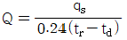
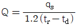
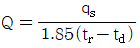
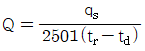
(정답률: 69%)
54. 다음 중 서로 상관이 없는 것끼리 짝지어진 것은?
- 순환수두 - 밀도차
- VAV - 변풍량방식
- 저압증기난방 - 팽창탱크
- MRT - 패널 표면온도
(정답률: 66%)
55. 공기조화방식에 관한 설명 중 옳은 것은?
- 각층 유닛 방식은 층별 부하변동에 대응하기 쉬우나 부분 운전은 어렵다.
- 유인유닛 방식은 외기 냉방의 효과가 크다.
- 가변풍량 방식으로 할 경우 최소 풍량 시에 필요한 외기량을 확보하는 것이 중요하다.
- 가변풍량 방식은 부하변동에 대하여 제어응답이 느리다.
(정답률: 68%)
56. 덕트 조립공법 중 원형덕트의 이음 방법이 아닌 것은?
- 드로우 밴드 이음(draw band joint)
- 비드 클림프 이음(beaded crimp joint)
- 더블 심(double seam)
- 스파이럴 심(spiral seam)
(정답률: 66%)
57. 다음 그림과 같은 외별의 열관류율 값은? (단, 표면 열전달률 ao=20W/m2ㆍK, 표면 열전달률 a1=7.5W/m2ㆍK 이다.)
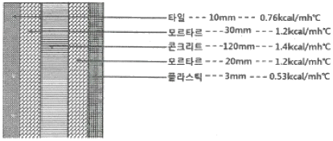
- 약 3.03W/m2ㆍK
- 약 10.1W/m2ㆍK
- 약 12.5W/m2ㆍK
- 약 17.7W/m2ㆍK
(정답률: 71%)
58. 다음 중 열원설비가 아닌 것은?
- 보일러
- 냉동기
- 송풍기
- 냉각탑
(정답률: 71%)
59. 연간 에너지 소비량을 평가할 수 있는 기간 열부하 계산법이 아닌 것은?
- 동적 열부하 계산법
- 디그리 데이법
- 확장 디그리 데이법
- 최대 열부하 계산법
(정답률: 65%)
60. 온수난방설계 시 달시-바이스바하(Darcy-Weibach)의 수식을 적용한다. 이 식에서 마찰저항계수와 관련이 있는 인자는?
- 누셀수(Nu)와 상대조도
- 프란틀수(Pr)와 절대조도
- 레이놀즈수(Re)와 상대조도
- 그라쇼프수(Gr)와 절대조도
(정답률: 83%)
4과목: 전기제어공학
61. 자기회로에서 퍼미언스(permeance)에 대응하는 전기회로의 요소는 무엇인가?
- 도전율
- 컨덕턴스
- 정전 용량
- 멜라스턴스
(정답률: 76%)
62. 3상 유도전동기의 출력이 5kW, 전압 200V, 역률 80%, 효율이 90%일 때 유입되는 선전류(A)는?
- 14
- 17
- 20
- 25
(정답률: 67%)
63. 전달함수
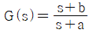
를 갖는 회로가 지상 보상회로의 특성을 갖기 위한 조건으로 맞는 것은?- a＞b
- a＜b
- a＞1
- b＞1
(정답률: 65%)
64. 직류기의 전기자반작용에 대한 설명으로 옳지 않은 것은?
- 중성축이 이동한다.
- 전동기는 속도가 저하된다.
- 국부적 섬락이 발생한다.
- 발전기는 기전력이 감소한다.
(정답률: 38%)
65. 변압기의 1차 및 2차의 전압, 권선수, 전류를 E1, N1, I1 및 E2, N2, I2라 할 때 성립하는 식으로 알맞은 것은?
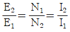
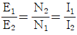
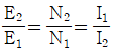
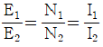
(정답률: 72%)
66. 그림과 같은 유접점 회로를 논리 게이크로 바꾸었을 때 올바른 것은?
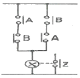
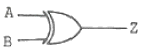
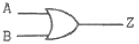
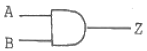
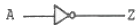
(정답률: 63%)
67. 농형 3상 유도전동기의 속도를 제어하는 방법으로 가장 옳은 것은?
- 부하를 조정하여 제어한다.
- 극수를 변환하여 제어한다.
- 회전자 자속을 변환하여 제어한다.
- 2차 저항을 삽입하여 제어한다.
(정답률: 64%)
68. 축전지 용량의 단위는?
- A
- Ah
- kW
- 0
(정답률: 74%)
69. 조종하는 사람이 없는 엘리베이터의 자동제어는?
- 프로그램제어
- 추종제어
- 비율제어
- 정치제어
(정답률: 86%)
70. 목표값을 직접 사용하기 곤란할 때 어떤 것을 이용하여 주 되먹임 요소와 비교하여 사용하는가?
- 기준입력요소
- 제어요소
- 되먹임요소
- 비교장치
(정답률: 70%)
71. 다음 중 프로세스 제어에 속하지 않는 것은?
- 온도
- 유량
- 위치
- 압력
(정답률: 74%)
72. 직류기에서 전압정류의 역할을 하는 것은?
- 탄소브러시
- 보상권선
- 리액턴스 코일
- 보극
(정답률: 73%)
73. 제어 결과로 사이클링(cycling)과 옵셋(offset)을 발생시키는 동작은?
- on-off 동작
- P 동작
- I 동작
- PI 동작
(정답률: 76%)
74. PLC(Programmble Logic Controller) CPU부의 구성과 거리가 먼 것은?
- 데이터 메모리부
- 프로그램 메모리부
- 연산부
- 전원부
(정답률: 76%)
75. 저항체에 전류가 흐르면 줄열이 발생하는데 이때 전류 I와 전력 P의 관계는?
- I=P
- I=P0.5
- I=P1.5
- I=P2
(정답률: 78%)
76. 전류의 측정 범위를 확대하기 위하여 사용되는 것은?
- 배율기
- 분류기
- 저항기
- 계기용변압기
(정답률: 73%)
77. G(jω)=j0.01ω에서 ω=0.01 rad/s일 때 계의 이득은 몇 dB인가?
- -100
- -80
- 160
- 200
(정답률: 50%)
78. 역률이 80%이고, 유효전력이 80 kW라면 피상전력은 몇 kVA인가?
- 100
- 120
- 160
- 200
(정답률: 63%)
79. 그림과 같은 블록선도에서 C(s)는? (단, G1=5, G2=2, H=0.1, R(s)=1 이다.)
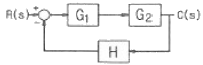
- 0
- 1
- 5
- ∞
(정답률: 65%)
80. 100 V용 전구 30W와 60W 두 개를 직렬로 연결하고 직류 100V 전원에 접속하였을 때 두 전구의 상태로 옳은 것은?
- 30 W가 더 밝다.
- 60 W가 더 밝다.
- 두 전구가 모두 켜지지 않는다.
- 두 전구의 밝기가 모두 같다.
(정답률: 77%)
5과목: 배관일반
81. 다음과 같이 두 개의 90° 엘보와 직관길이 ℓ=262 mm인 관이 연결되어 있다. L=300mm이고 관 규격이 20A이며 엘보의 중심에서 단면까지의 길이 A=32mm일 때 물린 부분 B의 길이는?
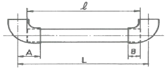
- 12 mm
- 13 mm
- 14 mm
- 15 mm
(정답률: 72%)
82. 신축곡관이라고 통용되는 신축이음은?
- 스위블형
- 벨로즈형
- 슬리브형
- 루프형
(정답률: 61%)
83. 압축기 과열(토출가스 온도 상승)원인이 아닌 것은?
- 고압이 저하하였을 때
- 흡입가스 과열 시(냉매부족, 팽창밸브 개도 과소)
- 워터재킷 기능불량(암모니아 냉동기)
- 윤활 불량
(정답률: 78%)
84. 공기조화설비 중 냉수코일에 관한 설명으로 틀린 것은?
- 공기와 물의 흐름은 대향류로 한다.
- 냉수 입ㆍ출구 온도차는 5℃정도로 한다.
- 가능한 한 대수평균 온도차를 크게 한다.
- 코일의 모양은 가능한 한 장방형으로 한다.
(정답률: 69%)
85. 5층 건물에 압력 수조식으로 급수하고자 한다. 5층 말단에 일반 대변기(세정밸브)를 설치할 경우 압력수조 출구의 압력을 어느 정도로 하여야 하는가? (단, 압력수조에서 대변기까지의 수직높이에 상당하는 압력 1.5 kgf/cm2이고, 압력수조에서 대변기까지의 마찰손실수두는 4mAq, 세정밸브의 필요 최소압력은 70 kPa 이다.)
- 약 1.5 kg/cm2
- 약 2.0 kg/cm2
- 약 2.3 kg/cm2
- 약 2.6 kg/cm2
(정답률: 43%)
86. 트랩의 봉수 파괴 원인에 해당하지 않는 것은?
- 자기 사이펀 작용
- 모세관 현상
- 증발
- 공동 현상
(정답률: 67%)
87. 배관용 보온재에 관한 설명으로 틀린 것은?
- 내열성이 높을수록 좋다.
- 열전도율이 적을수록 좋다.
- 비중이 작을수록 좋다.
- 흡수성이 클수록 좋다.
(정답률: 84%)
88. 배관 내로 물을 수송할 때, 다음 설명 중 틀린 것은?
- 관이 길수록 관내에서의 압력강하는 끝 부분에서 커진다.
- 같은 시간에 같은 양의 물을 흐르게 하면 관이 가늘수록 유속이 빠르다.
- 유량은 관의 단면적에 물의 평균유속을 곱하면 구해진다.
- 관경과 물의 유속은 일정한 관계가 없다.
(정답률: 87%)
89. 열팽창에 의한 배관의 이동을 구속 또는 제한하기 위해 사용되는 관 지지장치는?
- 행거(hanger)
- 서포트(suipport)
- 브레이스(brace)
- 레스트레인트(restraint)
(정답률: 73%)
90. 공조배관 설계 시 유속을 빠르게 설계하였을 때 나타나는 결과로 옳은 것은?
- 소음이 작아진다.
- 펌프양정이 높아진다.
- 설비비가 커진다.
- 운전비가 감소한다.
(정답률: 57%)
91. 방열기 전체의 수저항이 배관의 마찰손실에 비하여 큰 경우 채용하는 환수방식은?
- 개방류 방식
- 재순환 방식
- 리버스 리턴 방식
- 다이렉트 리턴 방식
(정답률: 55%)
92. 다음 주철 방열기의 도면 표시에 관한 설명으로 틀린 것은?
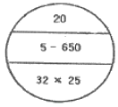
- 방열기 20쪽 수
- 유출 관경 32A
- 방열기 높이 650 mm
- 방열기종류 5세주형
(정답률: 69%)
93. 급수설비에서 발생하는 수격작용의 방지법으로 틀린 것은?
- 관내의 유속을 낮게 한다.
- 직선배관을 피하고 굴곡배관을 한다.
- 수전류 등의 폐쇄를 서서히 한다.
- 기구류 가까이에 공기실을 설치한다.
(정답률: 79%)
94. 전기가 정전되어도 계속하여 급수를 할 수 있으며 급수오염 가능성이 적은 급수방식?
- 압력탱크 방식
- 수도직결 방식
- 부스터 방식
- 고가탱크 방식
(정답률: 73%)
95. 관지지 장치 중 서포트(support)의 종류로 틀린 것은?
- 파이프 슈
- 리지드 서포트
- 롤러 서포트
- 콘스턴트 행거
(정답률: 60%)
96. 복사 난방설비의 장점으로 틀린 것은?
- 실내상하의 온도차가 적고, 온도 분포가 균등하다.
- 매설배관이므로 준공 후의 보수ㆍ점검이 쉽다.
- 인체에 대한 쾌감도가 높은 난방방식이다.
- 실내에 방열기가 없기 때문에 바닥면의 이용도가 높다.
(정답률: 76%)
97. 배수관의 최소 관경은? (단, 지중 및 지하층 바닥 매설 관 제외)
- 20 mm
- 30 mm
- 50 mm
- 100 mm
(정답률: 63%)
98. 가스 도매사업에 관하여 도시가스 배관을 시가지의 도로노면 밑에 매설하는 경우에는 노면으로부터 배관의 외면까지 얼마 이상을 유지해야 하는가? (단, 방호구조물 안에 설치하는 경우 제외한다.)
- 0.8 m
- 1 m
- 1.5 m
- 2 m
(정답률: 76%)
99. 도시가스 계량기(30m3/h미만)의 설치 시 바닥으로부터 설치 높이로 가장 적합한 것은? (단, 설치 높이의 제한을 두지 않는 특정장소는 제외한다.)
- 0.2m 이하
- 0.7m 이상 1m 이내
- 1.6m 이상 2m 이내
- 2m 이상 2.5m 이내
(정답률: 81%)
100. 동관의 이음에서 기계의 분해, 점검 보수를 고려하여 사용하는 이음법은?
- 납땜이음
- 플라스턴이음
- 플레어이음
- 소켓이음
(정답률: 76%)
PV = nRT
여기서 P는 압력, V는 부피, n은 몰수, R은 일반기체상수, T는 온도를 나타낸다.
먼저 부피를 L에서 m3으로 변환해야 한다.
52 L = 0.⑤2 m3
다음으로 상태방정식에서 몰수를 구해야 한다.
n = PV/RT
여기서 P는 kPa를 Pa로 변환해야 한다.
P = 300 kPa = 300000 Pa
T는 섭씨온도를 켈빈온도로 변환해야 한다.
T = 20℃ + 273.15 = 293.15 K
따라서,
n = (300000 Pa x 0.⑤2 m3) / (8.314 kJ/kmolㆍK x 293.15 K)
n = 0.0021 kmol
마지막으로 질량을 구하기 위해 몰수를 질량으로 변환해야 한다.
질량 = 몰수 x 분자량
질량 = 0.0021 kmol x 44 kg/kmol
질량 = 0.0924 kg
따라서, 적당한 프로판의 질량은 0.0924 kg이다. 정답은 "0.282 kg"가 아니므로 보기에서 제외된다.